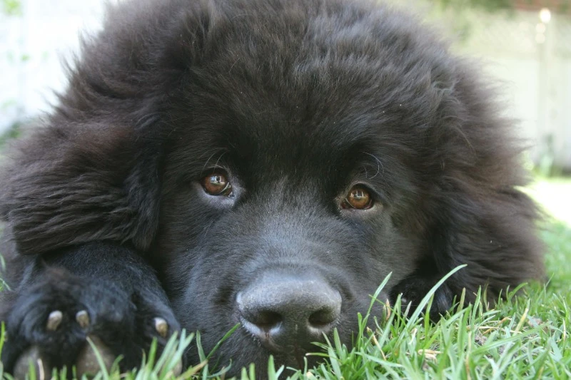
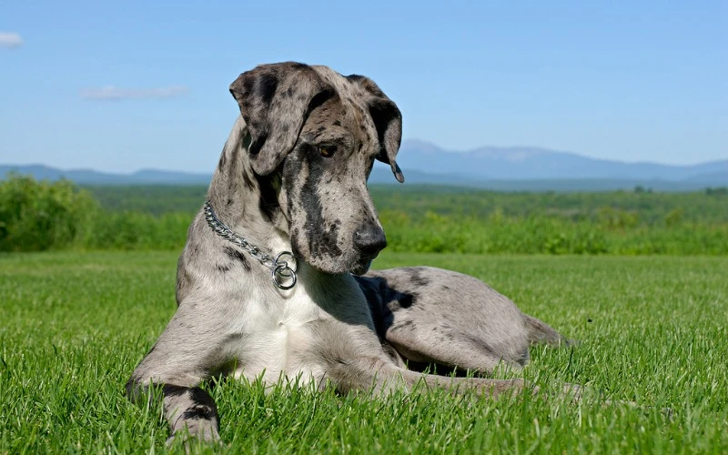
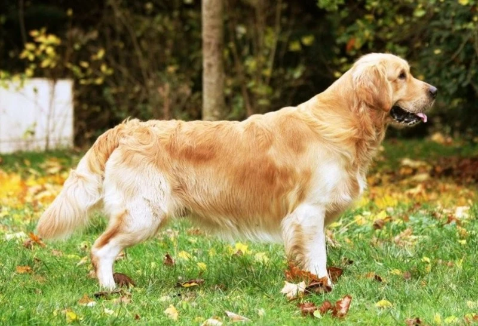
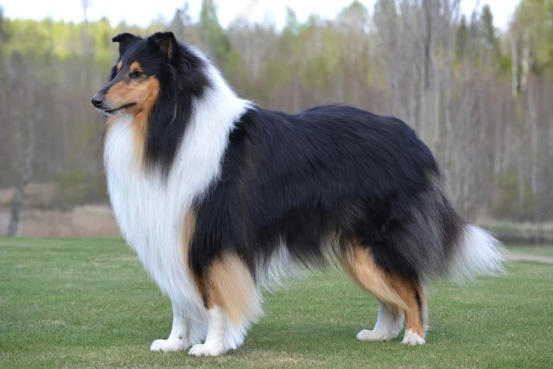
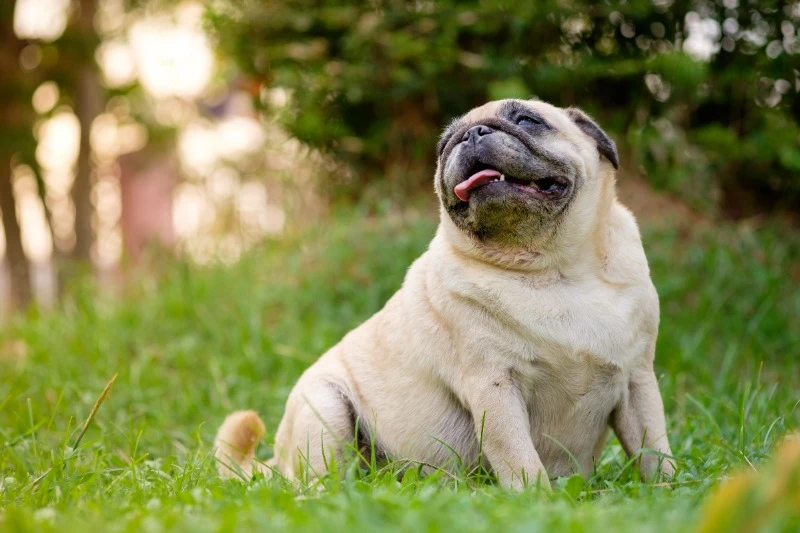

Які породи собак добре уживаються з кішками?
-
Ньюфаундленд: добряк-гігант
Ньюфаундленди – це величезні добрі поступливі собаки, які толерантно ставляться до всіх тварин, зокрема й до кішок. Ньюфаундленд не стане переслідувати або ображати котика, а навпаки, буде піклуватися про нього, а в разі небезпеки стане на його захист. Це чудові компаньйони для всіх членів сім'ї, включно з маленькими дітьми та іншими вихованцями. Однак слід враховувати, що ньюфаундленди – це дуже великі собаки, яким треба багато місця. Собакам потрібен догляд, їхню шерсть потрібно регулярно розчісувати і стригти, а також стежити за чистотою вушок. Ньюфаундленда не слід залишати без нагляду в одній кімнаті з маленькими тваринами, такими як кошенята, хом'яки або морські свинки, оскільки вони можуть випадково задавити або затоптати їх.
-
Німецький дог: граціозний велетень
Це ще одна порода собак, яка, незважаючи на свій гігантський розмір, відмінно уживається з кішками. Німецький дог – дуже спокійний, врівноважений розумний собака. Він не проявляє агресію до інших тварин, у нього відсутній мисливський інстинкт. Представники цієї породи поблажливо ставитися до котячих пустощів. У разі виявлення агресії з боку кота, дог просто відійде від нього подалі. Німецький дог – це порода для досвідчених власників, які можуть забезпечити йому достатню кількість фізичної активності та соціалізації. Ці собаки потребують просторого житла і якісного годування. Їхня шерсть не потребує особливого догляду, достатньо періодично розчісувати її та протирати вологою серветкою. Німецький дог - це вірний друг і охоронець для дому.
-
Золотистий ретривер: золоте серце
Це одні з найбільш добрих і поступливих собак у світі. Вони мають ніжні почуття до людей та інших тварин, зокрема й до кішечок. Золотистий ретривер не заподіє шкоди коту, а навпаки, пограється з ним. Собаки цієї породи дуже розумні та слухняні, їх легко дресирувати та соціалізувати. Ця порода потребує регулярних прогулянок і занять. Шерсть собак вимагає частого розчісування і стрижки, особливо в період линьки. Золотисті ретривери мають схильність до ожиріння, тому їх не можна перегодовувати.
-
Коллі: розумний пастух
Коллі – порода собак, яка вирізняється інтелектуальними здібностями та вірністю. Коллі прекрасно ладнає з кішками, їхні мисливські інстинкти слабо виражені, тому вони не вважають їх своєю здобиччю. Це м'які, турботливі собаки. Вони спокійно ставляться до кішок, і не стануть порушувати їхній особистий простір. Коллі - хороші друзі та компаньйони для всіх членів сім'ї, включно з іншими вихованцями. Коллі – порода для активних людей, які можуть забезпечити їм достатнє фізичне навантаження. Ці собаки люблять ігри, легко навчаються трюків. Їхня шерсть потребує регулярного догляду: розчісування та стрижки. Крім того, треба стежити за чистотою вух, очей і зубів вихованця.
-
Мопс: ледачий клоун
Ця порода собак популярна завдяки своєму характерному зовнішньому вигляду і кумедній поведінці. Мопси дуже товариські та ледачі, вони люблять лежати на дивані та веселити своїх господарів. Собаки цієї породи не стануть конфліктувати з кішками, тому що їм просто лінь з'ясовувати стосунки з ними. Мопс не образить кота, якщо той не зазіхне на святе: на улюблене спальне місце. Мопси – порода собак для тих людей, які не люблять активний спосіб життя і вважають за краще проводити час вдома. Мопсам не потрібні тривалі прогулянки, для підтримки здоров'я досить їх вигулювати кілька разів на день. Мопси схильні до ожиріння, тому потрібно стежити за їхнім харчуванням. Догляд за собакою полягає в регулярному чищенні вух і очей.